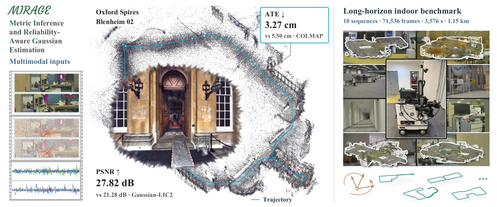
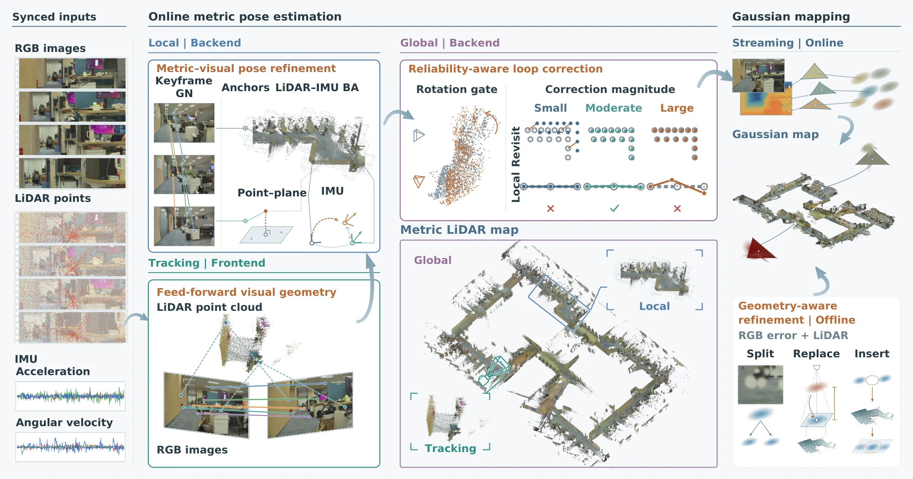
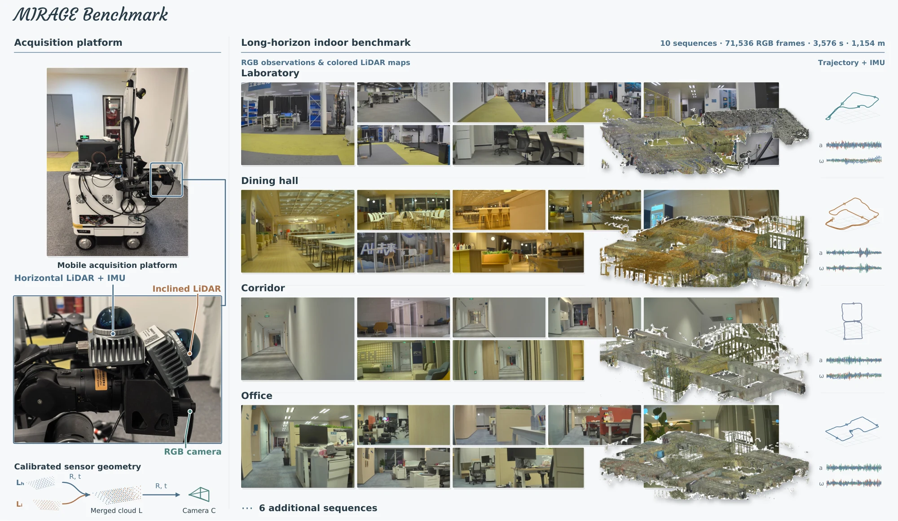
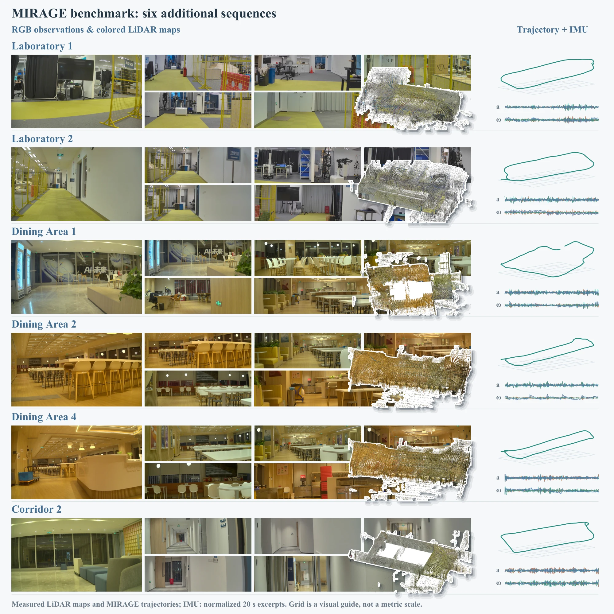
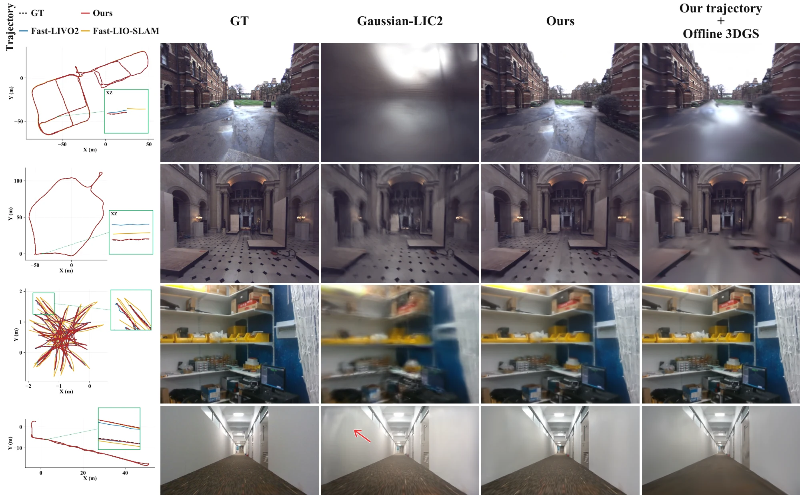
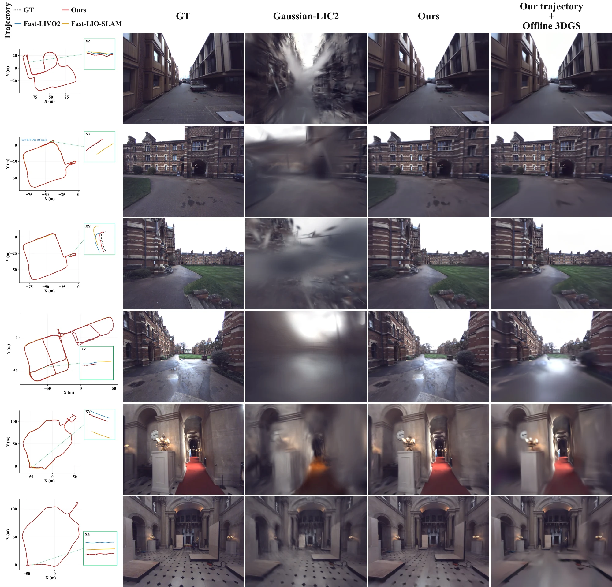
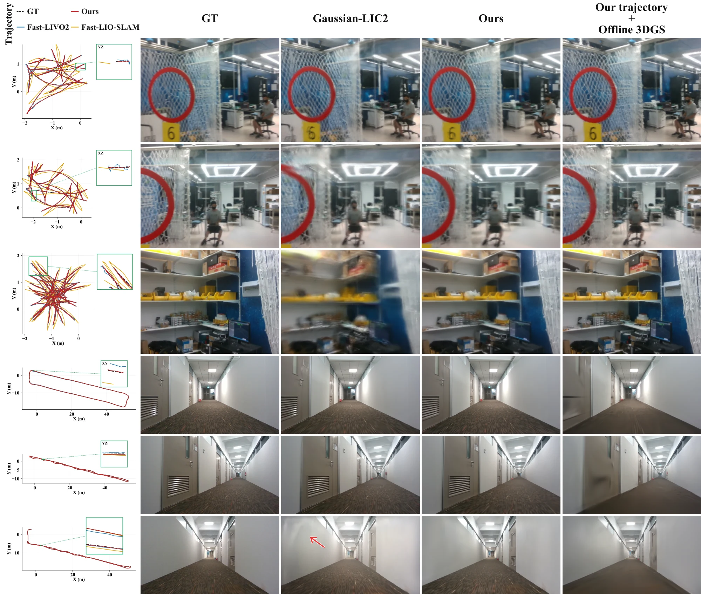

Metric inference × Gaussian estimation
MIRAGE
Metric Inference and Reliability-Aware
Gaussian Estimation
from Feed-Forward Vision
TL;DR

01 / In motion
Every scene. A different perspective.
Browse Oxford Spires, M2DGR, INS, and our indoor benchmark. Each demo pairs a reconstruction-process illustration with a refined Gaussian rendering replay.
02 / Method
Grounded in motion.
Refined in appearance.
Feed-forward visual evidence meets LiDAR–inertial metric motion, with reliability-aware pose refinement and structure-aware Gaussian adaptation.

Quantitative results
Metric accuracy. Rendering fidelity.
Pose estimation ATE (cm) ↓
Rendering quality PSNR ↑ / SSIM ↑ / LPIPS ↓
03 / Beyond short trajectories
A long-horizon indoor benchmark.
Object-rich laboratories, dining areas, corridors, and offices. Synchronized multimodal observations and MIRAGE-established 6-DoF reference trajectories support evaluation of vision-only reconstruction.
10sequences
71,536RGB frames
3,576 srecorded motion
1.15 kmtrajectory length

Explore six additional sequences +

Benchmark evaluation
04 / Visual results
Qualitative comparisons.

Explore additional qualitative comparisons on Oxford Spires

Explore additional qualitative comparisons on M2DGR & INS

Citation
@misc{wang2026mirage,
title = {{MIRAGE}: Metric Inference and Reliability-Aware Gaussian Estimation from Feed-Forward Vision},
author = {Wang, Xinzhe and Jiang, Changjian and Song, Kaiwen and Li, Xudong and
Ren, Kerui and Yi, Ran and Ma, Lizhuang and Shen, Chunhua and
Xu, Linning and Lu, Tao and Yu, Mulin},
year = {2026},
url = {https://hiroxzwang.github.io/publications/mirage}
}